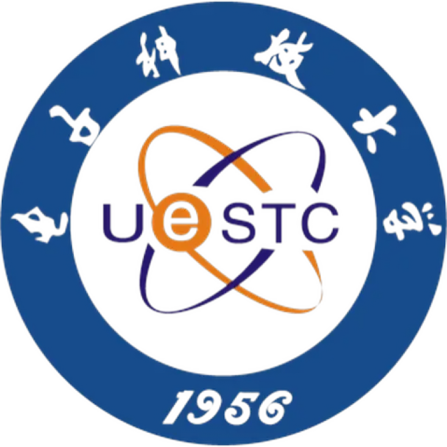

I work on manipulation policies that learn from egocentric human video and run on real hardware — across different robot bodies, and on the compute a robot can actually carry.
MS Artificial Intelligence Engineering, Carnegie Mellon University
Robotics & Control Systems · graduating December 2026
Currently at Safe AI Lab × Bosch Research and AirLab × Denso

fig. 01human demonstration → executable grasp
61.5→84.6%
CROSS-EMBODIMENT PRETRAIN
32B→2B
VLM DISTILLED FOR EDGE
83%
GRASP SUCCESS, 5 OBJECTS
3.79mm
SNAP INSERTION ACCURACY
Selected work
2022 — present
Apr 2026 — presentICRA 2027 · in prep
EgoX — cross-embodiment learning for manipulation
Safe AI Lab × Bosch Research · co-author
Different robots see, sense, and move differently, which makes it hard to train one policy on all of their data. I brought two of those bodies — a Galaxea R1 Lite and an xArm — into a shared modality interface, collected egocentric demonstrations, and evaluated the finetuned policy on real hardware.
MXT+ — modality tokenizers per embodiment, one shared trunk, modular action experts
Jan — Jun 2026
Distilling a 32B vision-language model to 2B
Carnegie Mellon · spatial reasoning on edge devices
A robot in an elevator has no network. I built a 50k-sample teacher pipeline and compared four distillation objectives against two parameter budgets. The finding was not the one I expected: full fine-tuning made the student worse than before training, and LoRA's real value was preventing that collapse rather than adding new ability.
Human hands and parallel-jaw grippers have nothing in common mechanically, so copying the hand pose directly does not work. I take only the approach direction and contact regions from the reconstructed MANO hand, and let Contact-GraspNet decide the gripper configuration — the intent transfers, the kinematics do not have to.
success 83% across 5 object typesup to +20% per object from human priors
RoCo task board benchmark · team of three, method design
Snap-fit parts need about 2 mm of alignment to seat, which open-loop behavior cloning cannot hold. Three diffusion heads split by end-phase motion handle the coarse trajectory; a small residual policy trained with TD3 in Isaac Sim supplies the last few millimetres in task space.
snap insertion at 3.79 mm / 2.95°scripted baseline 6/9monolithic ACT 0/9
Sep 2025 — Mar 2026
Multi-camera visual odometry
AirLab × Denso
Extended MAC-VO from a fixed stereo rig to arbitrary N-camera configurations, and unified several pretrained optical flow networks behind one uncertainty-aware frontend. Dynamic objects are masked out by semantic segmentation, and those masks then train a keypoint selector.
VGGT · UFM · RoMaV2 under one interface
Sep — Dec 2025
Faster generative policies
Carnegie Mellon · Push-T benchmark
Diffusion policies are accurate but slow, which is a problem when the controller has a deadline. Beta-distribution timestep sampling made single-step inference viable rather than a fallback.
single-step success 0.13 → 0.82
What I work with
tools, not badges
Policy & learning
PyTorch · HuggingFace · PEFT
Diffusion & flow-matching policies
Vision-language-action models
Knowledge distillation · LoRA
Residual RL · TD3 · behavior cloning
Perception & 3D
Multi-view geometry · triangulation
Camera calibration · stereo
6-DoF pose · point clouds
Segmentation · optical flow
OpenCV · Open3D · PCL · RealSense
Systems
ROS · Isaac Sim / Lab · MuJoCo
vLLM · DeepSpeed · CUDA
Python · C/C++ · embedded (STM32)
Docker · Linux · Git
PySpark · Kafka · PostgreSQL
Publications & patent
02
2026in preparation
EgoX: Egocentric Cross-Embodiment Learning for Versatile Manipulation
Co-author · target ICRA 2027
A framework that records human and robot demonstrations in one egocentric format and trains a modular transformer across both.
Filed Dec 2024pending
Nighttime Traffic Scene Salient Object Detection with Improved YOLOv9
Qin, L.; Luo, Y. · China patent application 2024119132237
Saliency-aware detection with low-level feature fusion, aimed at degraded visibility in night driving.
Off the clock
—
Yellowstone, 2026
I take photographs, mostly landscapes, mostly on road trips out of Pittsburgh. It turns out to be useful practice for the day job: framing a shot and calibrating a camera rig are the same problem viewed from opposite ends — one asks what the sensor should see, the other asks what it actually saw.
Before robots I studied communications engineering in Chengdu, spent a year at the University of Glasgow, and worked on nighttime object detection for driving scenes — which is where the patent came from.